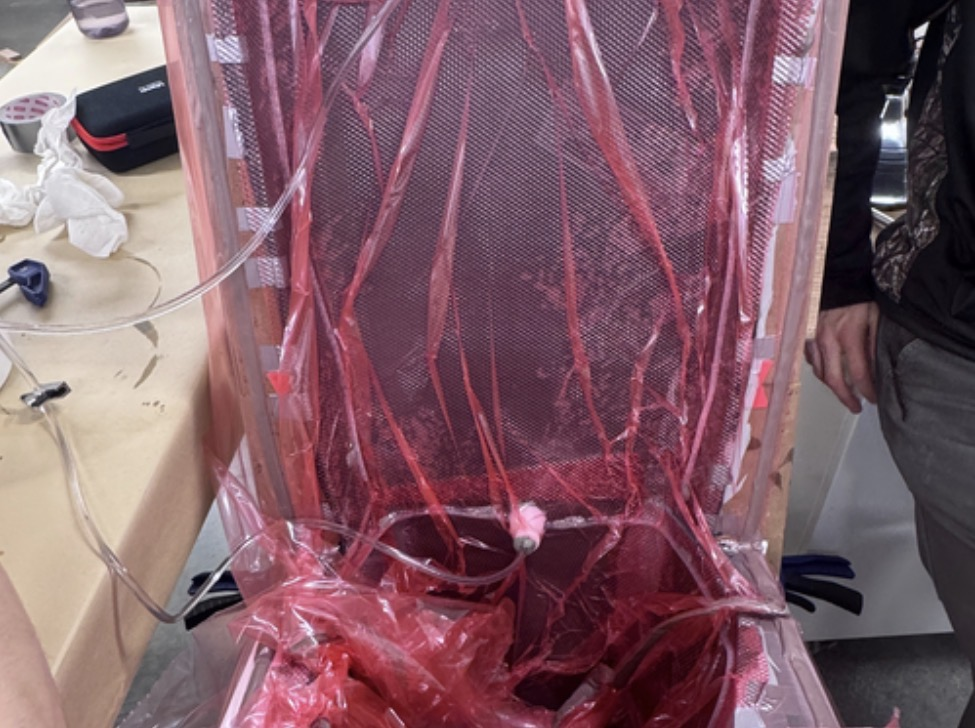
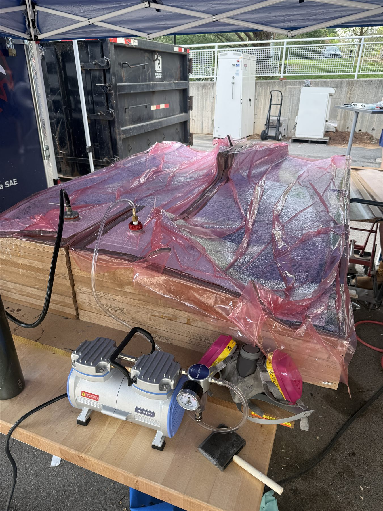

During my freshman spring with NovaRacing, I manufactured 20+ carbon-fiber parts for VU17's aerodynamic package, including the front and rear wings, undertray, nosecone, sidepods, and body panels. With schedule delays compressing manufacturing into three months, I helped the team complete the package in time for Formula SAE Michigan IC 2026.
My work included preparing 10+ 3D-printed PLA and CNC-routed MDF molds, performing wet layup and resin infusion, and trimming, fitting, and finishing cured components. Careful mold preparation reduced transferred print lines and corrective post-processing, improving surface consistency. I used sanding, epoxy clear coats, and polishing to address remaining surface defects and preserve the intended geometry. Throughout manufacturing and assembly, we balanced material usage, structural rigidity, surface quality, and fitment while checking mounting alignment, ground clearance, and access to the car.
I was selected to attend competition and participated in aerodynamic design judging alongside a senior capstone teammate. Although we completed the package, limited testing and iteration left its full-car aerodynamic performance insufficiently validated. Two engine failures also cut the team's competition short. Discussions with the judges reinforced the need to establish measurable downforce, drag, balance, and cooling targets early, then use simulation and physical testing to guide design changes before manufacturing.
Our aerodynamic package received 8 out of 15 points in design judging: the second-highest score in our entire design bay, behind Georgia Tech (10). The result reflected the work behind a complete, well-finished package in only three months, and the judges' feedback gave us a clear direction for the next car.
This entire FSAE aerodynamics / composites manufacturing project was all made possible by the generous support and guidance of the senior capstone team as listed in the gallery, but also the company and assistance of Luke Gustafson '27, Matthew Parker '27, Luke VanEmburgh '27, and Randall Preson '29.





